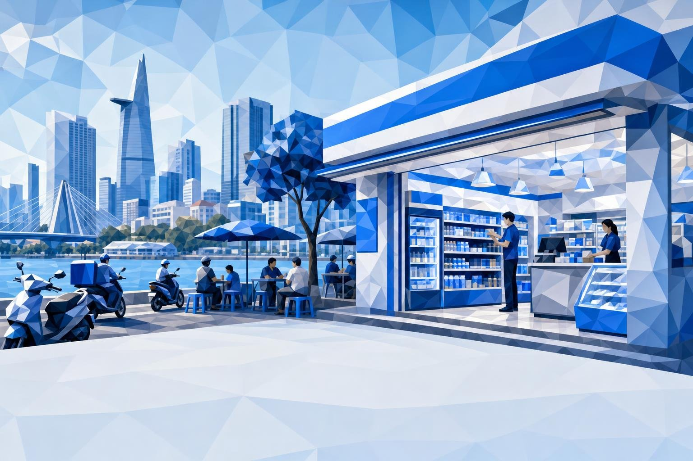

시장 진입 브리프
베트남 편의점 출점 인허가
외국계 편의점 체인은 신규 점포마다 어떤 인허가가 필요하며, 경제적 수요심사는 언제 발목을 잡는가?
2026
Know first.
Move first.
Move first.

외국계 편의점 체인은 신규 점포마다 어떤 인허가가 필요하며, 경제적 수요심사는 언제 발목을 잡는가?
본 브리프는 점포가 통과해야 할 규정을 읽고, 그것이 출점 속도와 비용에 어떤 의미를 갖는지 검증합니다. 근거는 두 갈래입니다. 1차 법령 자료(시행령, 조약상 약속, 절차 안내)와 시장 근거(점포 센서스, 기업 공시, 현지 보도)입니다. 모든 정량적 서술에는 출처 태그를 달았습니다.
긴장 지점: 베트남은 조약 투자자에게 2024년 1월 심사 폐지를 약속했지만, 이를 실행하는 국내 규정은 2026년 10월 18일에야 시행되며 모든 투자자를 포괄하지도 않습니다.
구매자의 다섯 질문에 한 줄씩 답하고 확신도를 함께 적었습니다. 근거는 이어지는 각 장에 있습니다.
| 질문 | 당사의 답 | 확신도 |
|---|---|---|
| 1 · 1호점과 추가 점포의 인허가 경로 | 투자등록증과 기업등록증, 소매 영업허가를 거쳐 점포마다 성에서 점포 설립허가를 받습니다. 본사와 같은 성의 1호점은 영업허가와 동시 신청이 가능합니다[Decree 342/2026] | |
| 2 · 수요심사의 적용 범위와 면제 | 2호점 이후 모든 편의점·미니슈퍼가 대상이며, CPTPP·EVFTA·UKVFTA 투자자는 제외됩니다. 규모 기준 면제는 상업시설 내 500 m² 미만의 비편의점 업태에 한정됩니다[Decree 342/2026] | |
| 3 · 누가, 무엇을 기준으로, 얼마 동안, 얼마의 비용으로 결정하나 | 성 위원회(인민위원회, 산업무역, 재무, 공안)가 사(社) 단위 시장을 20영업일 내 심사합니다. 전체 14~48영업일, 대기 1개월당 점포당 약 USD 12,000 비용[Kira estimates] | |
| 4 · 추가로 얹히는 분야별 규정 | 조리식품의 식품안전 인증, 증류주의 사 단위 허가, 외국인투자 소매업체의 담배 판매 불가, 소방 의무, POS 연동 전자 인보이스, 임대차와 함께 만료되는 점포 허가 | |
| 5 · 인허가 리스크를 최소화하는 구조와 판단 기준 | 조약국 투자자: 자체 법인. 비조약국 투자자: 베트남 자본 운영자에 대한 가맹. 당사 해석으로는 현지 과반 합작법인이라도 외국 측 파트너의 심사는 남습니다. 10건 중 9건이 30영업일 내 허가되면 진행 |
흐름은 투자등록증에서 개점까지 이어집니다. 1~3단계는 회사 단위로 한 번, 점포 설립허가와 점포 준비는 점포마다 반복됩니다.
규모 기준의 유일한 면제는 상업시설 내 소형 점포이며, 편의점·미니마트·슈퍼마켓은 명시적으로 제외됩니다.
| 점포 사례 | 수요심사 | 이유 |
|---|---|---|
| 1호점(업태 무관) | 1호점은 설립허가만 필요 | |
| 상업시설 내 500 m² 미만, 비편의점 업태 | 규모 기준 유일한 면제 | |
| 편의점·미니마트, 조약국 투자자 | 조약 면제, 제22조 1항 | |
| 편의점·미니마트, 비조약국 투자자 | 소재 사·방을 시장으로 심사 | |
| 5,000 m² 이상 점포, 비조약국 투자자 | 성 전체를 시장으로 심사 | |
| 외국 자본이 없는 체인 | 외국인투자자용 허가 자체가 불요 |
입지와 업태가 모두 요건을 충족해야 합니다. 상업시설 내 90 m² 편의점이라도 비조약국 투자자라면 심사가 필요하지만, 같은 시설의 300 m² 화장품 매장은 필요 없습니다[DNHN Sep 2026].
심사는 국지화되었습니다. 5,000 m² 미만 점포의 시장은 사 또는 방이며, 위원회는 점포 주변 거리의 상점을 봅니다[Decree 342/2026].
가장 빠르게 출점하는 곳은 베트남 자본 미니슈퍼이며, 이들은 점포 설립허가도 수요심사도 신청하지 않습니다.
국내 체인은 외국인투자자용 허가 없이 확장합니다. WinMart+와 Bach Hoa Xanh가 집계 점포의 4분의 3을 차지하며, 센서스에서 12개월간 소형 업태가 순증 약 1,900개를 기록했고 대부분 미니슈퍼였습니다[Q&Me 2026].
국내 체인을 인수하면 허가 문제가 돌아옵니다. 외국 자본을 받은 베트남 소매기업은 영업허가와 점포 설립허가를 신청해야 하며, 허가 취득까지 영업 지속은 최장 12개월입니다[VCCI]; [Legal alerts Sep 2026].
33개월 동안 일본계 체인은 조약상 권리를 갖고 있었지만, 인허가 창구에는 이를 적용할 국내 규정이 없었습니다.
면제는 투자자의 본국과 그 조약을 따르므로, 같은 거리의 두 체인이 서로 다른 인허가 경로를 밟을 수 있습니다.
| 투자자 본국 | 조약 | 심사 폐지 | 적용 |
|---|---|---|---|
| 일본, 싱가포르, 말레이시아, 호주, 캐나다 등 10개국 | CPTPP | 2024년 1월 14일 | |
| EU 27개 회원국 | EVFTA | 2025년 8월 | |
| 영국 | UKVFTA, CPTPP | 2026년 초 | |
| 한국 | VKFTA, RCEP | 약속 없음 | |
| 중국 | ACFTA, RCEP | 약속 없음 | |
| 태국 등 CPTPP 비회원 아세안 | ASEAN, RCEP | 약속 없음 | |
| 미국, 대만, 홍콩 | 심사를 다루는 조약 없음 | 없음 |
가장 큰 수혜자는 일본 브랜드입니다. Ministop과 FamilyMart는 합계 356개점을 운영하며, FamilyMart는 FY2031까지 하노이에 약 300개점을 계획하고 있습니다[Q&Me 2026]; [RIN Sep 2026].
외국 브랜드 2위는 심사 안에 남습니다. 318개점의 GS25는 브랜드 보유사가 한국 기업이며, 당사 해석으로는 파트너가 70%를 보유해도 자사 점포의 심사는 벗어나지 않습니다[Q&Me 2026]; [Brands Vietnam GS25].
기준은 정성적이며 점수나 기준치가 공개되지 않아, 결과 리스크는 각 성의 판단에 달려 있습니다.
| 기준 | 위원회가 보는 항목 | 체인이 제출할 자료 |
|---|---|---|
| 시장 구조 | 방 내 기존 상점, 미니마트, 전통시장과 그 안정성 | 방 단위 점포·시장 센서스, 가장 가까운 재래시장까지 거리 |
| 수요와 공급 능력 | 방의 수요와 기존 점포의 충족 여부 | 거주자 수, 신규 주택, 유동 인구, 1인당 지출 |
| 기여 | 고용, 소매 현대화, 사회경제적 효과 | 현지 채용과 교육, 현지 조달 비중, 납세액 |
| 안보와 질서 | 치안, 질서, 사회 안전(국경 지역 포함) | 점포 배치, 영업시간, 보안 계획 |
5개 부서 위원회가 결정합니다. 성 인민위원회가 위원장을 맡고 산업무역, 재무, 성 공안이 참여합니다[Decree 342/2026].
구 규정에서는 대기가 문제였습니다. Aeon의 베트남 책임자는 수요심사가 설명 없는 지연을 낳고 때로 수개월이 걸렸다고 밝혔습니다[RIN Sep 2026].
방은 더 커졌습니다. 통폐합으로 사는 10,035개에서 3,321개로 줄어, 한 방의 시장에 포함되는 상점은 약 3배가 되었습니다[Gov reform 2025]; [Kira estimates].
안보 협의는 조약국·비조약국 투자자 모두에 적용되며, 당사 해석으로는 점포망이 선을 넘은 뒤의 각 허가에 적용됩니다.
임대차가 시작된 점포는 허가가 나올 때까지 임차료를 내고 이익을 잃습니다. 추가 대기는 100개점 미만 조약국 투자자 대비입니다.
포장식품의 허가는 가볍고, 외국 체인의 상품 구성과 허가가 동네 상점과 갈리는 지점은 조리식품, 증류주, 담배입니다.
| 규정 | 점포에 필요한 것 | 발급 기관 | 현황 | 부담 |
|---|---|---|---|---|
| 식품안전 | 매장에서 조리·가공하는 점포는 적격 인증서 필요. 포장식품 판매는 인증 대상 아님 | 성 식품안전 당국 | 시행령 15/2018 계속 적용. 시행령 46/2026은 2026년 예정된 개정 식품안전법까지 정지 [VB Food 2026] | |
| 주류 | 알코올 도수 5.5% 이상 증류주는 소매 허가 필요, 맥주는 불요, 18세 미만 판매 금지 | 2025년 7월 1일부터 사 인민위원회 | 시행 중 [Decree 105/2017]; [Decree 139/2025] | |
| 담배와 제한 품목 | 담배는 베트남 유통 분야 약속 대상이 아님. 쌀, 설탕, 서적, 정기간행물, 영상물은 별도 승인 필요 | 부처와 성 | 시행 중 [WTO VN schedule]; [Decree 342/2026] | |
| 소방 | 가연물을 다루는 30 m² 이상 점포는 관리 대상. 2027년 7월 1일까지 화재경보의 소방기관 연결 | 성 소방경찰 | 2025년 7월 1일부터 시행 [Decree 105/2025] | |
| 인보이스 | 매출을 POS 연동 전자 인보이스로 세무 당국에 전송 | 세무 당국 | 2025년 6월 1일부터 [Decree 70/2025] |
허가 유효기간은 투자등록증 잔여 기간과 점포 임대차 기간 중 짧은 쪽이며, 갱신은 마지막 3개월 안에 신청합니다.
기존 허가는 유효합니다. 10월 18일 이전 발급된 허가는 기재된 활동을 계속 포괄합니다[Legal alerts Sep 2026].
심사 중인 신청은 구 규정을 따릅니다. 10월 18일 이전 접수된 신청은 시행령 09로 판단되며, 서류가 미비하면 6개월 내 보완해야 하고 그 이후에는 시행령 342가 적용됩니다[Legal alerts Sep 2026].
외국 자본이 조금이라도 들어가면 운영자는 인허가상 외국인투자기업이 되고, 조약상 심사는 외국인투자자의 본국을 봅니다.
| 진입 방식 | 소매 영업허가 | 점포별 설립허가 | 수요심사(KR) | 수요심사(JP) | 가맹 등록 |
|---|---|---|---|---|---|
| 자체 법인(외국 100%) | 불요 | ||||
| 합작, 외국 소수 지분(예: 30%) | 불요 | ||||
| 국내 체인 인수 | 불요 | ||||
| 자회사가 현지 점주에게 가맹 | 필요 | ||||
| 베트남 자본 운영자에 마스터 가맹 | 필요(브랜드 보유사가 부처에) |
비조약국 투자자 기준의 읽는 법: 위에 있는 방식일수록 수요심사 위원회를 기다리는 점포가 적습니다.
이 모델은 베트남에 이미 있습니다. GS25는 편의점 브랜드 중 처음으로 2021년 가맹 사업을 시작했고, 2023년까지 남부 211개점 중 35개가 가맹점이었습니다[KED Aug 2023].
소규모 점주를 위해 설계되었습니다. 65~70 m², 100~120 m², 150 m²의 세 가지 형태로, 투자금은 다른 해외 브랜드의 3분의 1에서 5분의 1이며 예상 매출총이익률은 25%입니다[KED Aug 2023].
각 조건에는 점포망이 커져 실수의 대가가 커지기 전, 첫해에 실행할 수 있는 검증을 붙였습니다.
| 조건 | 확신도 | 검증 방법 |
|---|---|---|
| 조약국 투자자의 점포 설립허가가 14~20영업일에 나온다 | 10월 18일 이후 첫 10건을 추적하고, 9건이 30영업일 내 나오면 진행 | |
| 위원회가 비조약국 점포를 추가 요청 없이 승인한다 | 완전한 방 단위 센서스를 첨부해 2개 성에서 3개 점포를 신청하고 추가 요청 횟수를 센다 | |
| 안보 협의가 14일 절차로 유지된다 | 성 산업무역국에 협의 운영 방식을 확인하고, 100번째 이후 첫 허가를 일찍 신청한다 | |
| 임대인이 허가 연동 무상 임대를 수용한다 | 첫 20건의 임대차 협상에 조항을 넣고, 절반이 수용하면 진행 | |
| 가맹점이 업태와 식품 기준을 지킨다 | 5개 점포 가맹 시범에서 직영점 대비 월간 감사 점수를 측정 | |
| 새 식품법이 자체 브랜드 식품에 사전 승인을 추가하지 않는다 | 2026년 말 국회 회기의 개정 식품안전법을 추적하고 자체 브랜드 제품을 조기 신고 |
시행령 342 아래 출점을 좌우하는 요소에 대해 다섯 가지 진입 방식을 평가했습니다. 평가는 규정과 선행 사례에 근거한 당사 판단입니다[Kira estimates].
| 진입 방식 | 허가 속도(JP) | 허가 속도(KR) | 업태 통제 | 위험 자본 | 승인 리스크 |
|---|---|---|---|---|---|
| 자체 법인 | 14 wd | 34-48 wd | |||
| 현지 기업과 소수 지분 합작 | 심사 잔존 | 파트너 조건 | |||
| 국내 체인 인수 | 12개월 재허가 | ||||
| 직영 핵심 점포 + 가맹점 | 가맹점 | ||||
| 현지 기업에 마스터 가맹 | 로열티 모델 |
일본계 진출 기업: 일본 모회사를 투자자 명의로 하는 자체 법인으로, 모든 점포를 10월 18일 이후 신청합니다.
한국계 진출 기업: 심사를 감수하는 10~20개 직영 핵심 점포와 베트남 자본 가맹점을 통한 확장입니다. GS25가 2021년에 연 길입니다[KED Aug 2023].
판단을 바꿀 조건: 심사가 외국 과반 운영자만 본다는 지침이 나오면 현지 과반 합작이 한국계의 경로가 됩니다.
여덟 가지 리스크를 2028년까지의 발생 가능성과 출점에 대한 영향으로 배치했습니다. 심각도는 점수가 아니라 칸의 음영으로 나타냅니다[Kira estimates].
출점의 인허가 측면에 대해 측정 가능한 검증을 갖춘 네 개의 관문을 두었습니다. 예산은 법인, 변호사, 허가 신청, 각종 허가만 포함하며 점포 투자비는 제외합니다[Kira estimates].
| 관문 | 실행 내용 | 예산 | 기간 | 진행 / 중단 판단 |
|---|---|---|---|---|
| G0 · 설립 | 투자자 명의, 투자·기업 등록증, 소매 영업허가. 허가 연동 무상 임대 조항을 넣은 임대차 표준안 | USD 0.3-0.6 m | 2026년 4분기~2027년 1분기 | 영업허가 취득, 조약 적용에 대한 변호사 서면 확인 |
| G1 · 첫 10개 | 2개 성에서 점포 설립허가 10건, 방 단위 센서스와 기여 설명 첨부 | USD 50-100 k | 2027년 1~2분기 | 10건 중 9건이 30영업일 내(조약국) 또는 50영업일 내 반려 없음(비조약국). 중단: 반려 2건 |
| G2 · 시범 점포망 | 30~60개 점포, 식품·증류주·소방 허가, 비조약국은 5개 점포 가맹 시범 | USD 0.2-0.4 m | 2027년 하반기~2028년 | 조리식품 취급 전 점포 인증, 갱신과 반기 보고 지연 없음 |
| G3 · 100개 이상 | 안보 협의 자료 제출, 비조약국은 가맹 비중 확대 | 연 USD 0.1-0.2 m | 2029년 이후 | 100번째 이후 첫 허가가 28영업일 내 |
베트남의 편의점·미니슈퍼 체인 점포를 보유·운영·유치하는 기업을 브랜드 보유사부터 입지까지 분류했습니다. 점포 수는 별도 표기가 없으면 2026년 3월 센서스 기준입니다.
출처 태그(예: [Decree 342/2026], [Q&Me 2026])가 붙은 수치는 해당 출처에 근거하며, 전체 서지 정보는 아래와 같습니다. [Kira estimates]가 붙은 수치는 당사 애널리스트가 공개 자료로부터 각 페이지에 제시한 방법으로 산출한 것입니다. 허가 기간은 법정 단계의 합계이며, 대기 비용은 임차료·인건비·손실 이익에 추가 일수를 곱해 산출했습니다. 태그가 붙은 수치의 약 4분의 1이 당사 산출입니다. 2026년 10월 초까지의 데스크 리서치이며 인터뷰는 하지 않았습니다. 규정은 시행령 원문과 법률 해설에서 읽었으며, 본 보고서는 시장 조사로서 법률 자문이 아닙니다.
본 보고서가 시장과 앞으로의 의사결정에 대해 명확한 시각을 제공하기를 바랍니다. 추가 논의, 맞춤형 조사, 협업 제안은 당사 리서치팀으로 문의해 주십시오.
투자자에 따라 답이 달라지는 이유
점포별 허가는 여전히 필요합니다. 외국인투자 체인은 소매 영업허가를 한 번 받은 뒤, 점포마다 성 인민위원회로부터 별도의 소매점포 설립허가를 받아야 합니다[Decree 342/2026].
수요심사 적용 여부는 점포 규모가 아니라 투자자의 본국이 결정합니다. 편의점과 미니슈퍼는 애초에 소형 점포 면제 대상이 아니었습니다. 10월 18일부터 CPTPP·EVFTA·UKVFTA 국가 투자자는 심사를 면제받지만, 한국·중국·태국·미국 투자자에게는 계속 적용됩니다[Legal alerts Sep 2026].
규모가 커지면 또 하나의 심사가 붙습니다. 소형 점포 100개 이상의 망은 신규 허가가 공안부와 국방부 의견 청취를 거칩니다[Decree 342/2026].